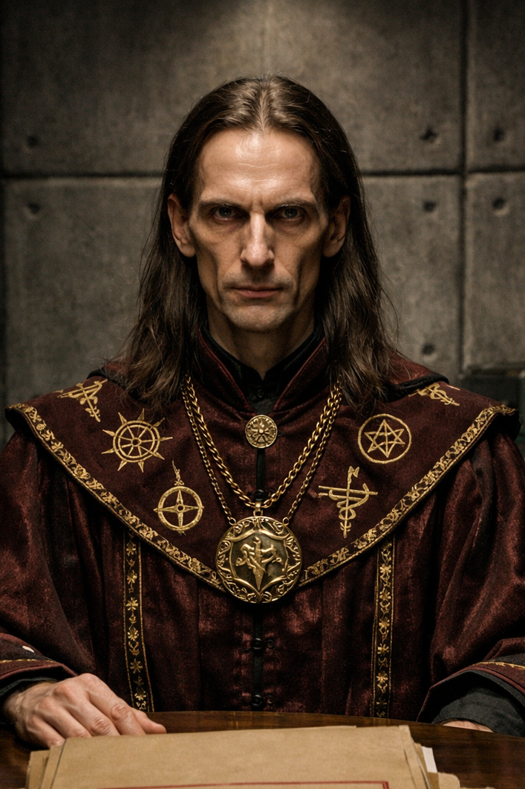

×

Магистр Сигизмунд
- Полное имя: Неизвестно
- Вид: Человек
- Пол: Мужской
- Возраст: Около 45 лет
- Статус: Жив
- Род занятий: Оккультист, «специалист по символическим структурам»
- Первое появление: Глава 28
На данном сайте содержится информацию о произведении "От предвечной Тьмы к лунному Свету". Среди этой информации имеется большое количество сюжетных спойлеров.
«Он действует по паттерну тени Марса, с наложением на трёхузловую линию Эгрегора Воли».
— Сигизмунд во время первого доклада в штабе.
Магистр Сигизмунд — самопровозглашённый специалист по оккультным наукам и архетипам, привлечённый к работе оперативного штаба по поимке Чайного Мстителя. В ходе расследования был официально признан шарлатаном, использующим заученные формулы для манипуляции слушателями.
Сигизмунд описывается как мужчина лет сорока пяти. Он худой и высокий, обладает впалыми щеками и держит неестественно прямую осанку, стремясь казаться выше и значительнее, чем есть на самом деле. Его облик дополняют длинные волосы и тёмно-бордовая мантия, украшенная вышитыми алхимическими символами.
Сигизмунд позиционирует себя как эксперт, работающий с «символическими структурами, архетипами и повторяющимися паттернами событий», особенно в зонах социального напряжения. Он обладает навыком адаптации своей речи под реакцию аудитории, используя псевдонаучные и мистические термины для придания своим словам веса.
Заявленные (но не подтверждённые) навыки:
Сигизмунд был приглашён в секретный НИИ по распоряжению высшего руководства (заместителя министра обороны), которое в условиях тупика в расследовании решило прибегнуть к нетрадиционным методам. Вместе с коллегами — Вороном и Мереаной — он должен был составить метафизический портрет преступника.
Несмотря на уверенный тон и использование сложной терминологии, Сигизмунд быстро вызвал подозрения у кадровых офицеров штаба. Полковник Беловец организовал проверку, в ходе которой Сигизмунду и другим «экстрасенсам» предложили определить содержимое закрытого ящика. Магистр не смог угадать, что внутри находится обычный канцелярский степлер.
Дальнейшая проверка показала, что Сигизмунд является обычным мошенником, работающим по набору заученных формул. Хотя заместитель министра обороны разрешил ему остаться в штабе «для вида», чтобы не нарушать приказ министра, его мнение перестало учитываться при планировании операций.